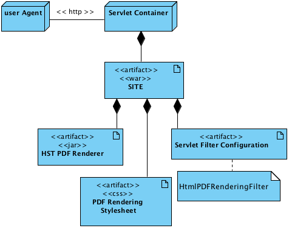
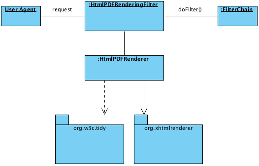

HST PDF Renderer

Introduction
HST PDF Renderer basically transforms HTML output into PDF output. It leverages Flying Saucer library to generate PDF output. Because Flying Saucer requires valid XHTML input for PDF generation, HST PDF Renderer supports transformation from HTML markups to valid XHTML markups by leveraging JTidy library. HST PDF Renderer also supports a servlet filter which transforms normal HTML output to PDF output at runtime.
Project Status
For the latest version, see the Release notes.
Architecture
HST PDF Renderer contains a servlet filter named 'HtmlPDFRenderingFilter' which transforms HTML output from the SITE application into PDF output. In the following sections, you will see a typical deployment view in a web application and a runtime view which shows how its components are interacting at runtime.
Deployment View
- Basically HST PDF Renderer is deployed inside a web site application (which is deployed onto a servlet container).
- You should configure the servlet filter ("HstPDFRenderingFilter") of HST PDF Renderer and its servlet filter mapping in order to activate the automatic PDF generation from the normal html output at runtime.
- You should configure CSS file(s) for HstPDFRenderingFilter. The CSS file(s) are used when generating PDF output, so you can customize the CSS files for your tastes.
Runtime View
- The servlet filter, HstPDFRenderingFilter, should be located before the other rendering filters such as HstFilter.
- HstPDFRenderingFilter invokes the filterChain to invoke the remaining servlet filtr chain and captures all the HTML response output.
- Then HstPDFRenderingFilter invokes HtmlPDFRenderer, which contains all the core logic for XHTML transformation and PDF generation. (Note: HtmlPDFRenderer can be used separately, even in a stand-alone application.)
- Then HtmlPDFRenderer cleans up the captured HTML output and transforms it to valid XHTML output, by leveraging JTidy library (org.w3c.tidy.*).
- Finally HtmlPDFRenderer invokes Flying Saucer library (org.xhtmlrenderer.*) in order to generate PDF output. The PDF output is sent to the user agent through HstPDFRenderingFilter in the end.